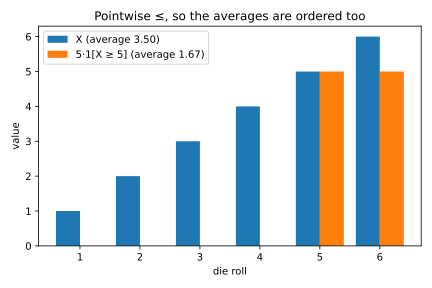
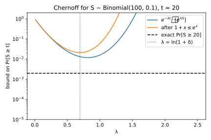
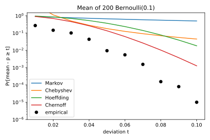
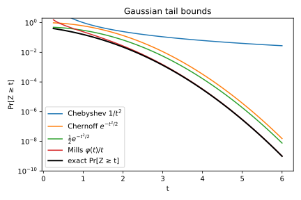
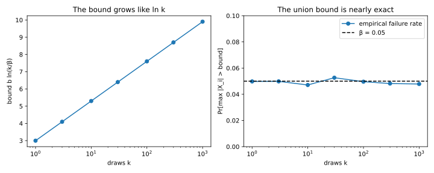
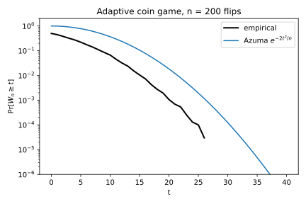

2 Concentration inequalities
Almost every number in machine learning is random. A test error depends on which examples happened to land in the test set, and the size of a randomly sampled minibatch changes from one step to the next. Before you rely on such a number, you need to know how far a random quantity can be from what you expect, and with what probability.
Concentration inequalities answer with one idea. To bound the chance that a quantity lands far out, you compare it with something whose average you know, and the more you know, the sharper the comparison. The mean alone gives Markov’s inequality, whose bound decays like \(1/t\) at a distance \(t\) out, and the variance gives Chebyshev’s, which decays like \(1/t^2\). The moment generating function (MGF), an average of an exponential of the quantity, gives the Chernoff bound, which decays exponentially. Later sections apply it to bounded variables, to random noise added to a number, and to sums of dependent terms.
The running example is a classifier whose true error rate is 10%. You test it on \(n = 200\) examples drawn independently, and its measured error rate is the fraction of them it gets wrong. How likely is the measured rate to reach 15%, half again its true value? A simulation of 200,000 test sets says \(9.6\times10^{-3}\). The bounds of this chapter put that probability at most at 0.67 (Markov), 0.18 (Chebyshev), 0.37 (Hoeffding) and 0.135 (Chernoff), and each section explains one of these numbers.
2.1 Markov and Chebyshev
Start with the crudest version of the question. If all you know about a quantity is its mean, or its mean and its variance, how often can it land far from where you expect? The answers are weak, but every stronger bound in this chapter is the same argument applied to a better function.
The argument turns a probability into an average, and a die shows how. Write \(\mathbf 1[A]\) for the indicator of an event \(A\), the variable that is 1 on outcomes where \(A\) happens and 0 elsewhere. Its average is \(\Pr[A]\), because averaging a 0/1 variable counts the fraction of outcomes where the event happens. Averages also keep order: if one variable is at most another on every outcome, so is its average. Now roll a fair die, let \(X\) be the roll, and compare \(5\cdot\mathbf 1[X \ge 5]\) with \(X\) itself, outcome by outcome (Table 2.1).
| Roll | 1 | 2 | 3 | 4 | 5 | 6 | Average |
|---|---|---|---|---|---|---|---|
| \(5\cdot\mathbf 1[X \ge 5]\) | 0 | 0 | 0 | 0 | 5 | 5 | \(5\Pr[X \ge 5]\) |
| \(X\) | 1 | 2 | 3 | 4 | 5 | 6 | \(3.5\) |
Every entry in the top row is at most the one below it, so the averages are ordered as well, and \(5\Pr[X \ge 5] \le 3.5\). Dividing by 5 gives \(\Pr[X \ge 5] \le 0.7\), while the true value is \(1/3\). The bound is weak, but it used only the mean (Figure 2.1).

Markov’s inequality is the same comparison with any threshold in place of 5. It needs the quantity never to be negative, because negative values could balance large ones in the average.
Theorem 2.1 (Markov’s inequality) Let \(X\) be a random variable that is never negative, and let \(a > 0\) be a threshold. Then \[\Pr[X \ge a] \le \frac{\mathbb E[X]}{a}. \tag{2.1}\]
Proof.
- Compare outcome by outcome. If \(X \ge a\), the scaled indicator \(a\,\mathbf 1[X \ge a]\) equals \(a\), which is at most \(X\). If \(X < a\), it equals 0, which is at most \(X\) because \(X\) is never negative, the only use of the hypothesis. So at every outcome \[a\,\mathbf 1[X \ge a] \le X. \tag{2.2}\]
- Average both sides. Averages keep a pointwise order, and the average of the indicator is the probability of its event, so \[a\Pr[X \ge a] \le \mathbb E[X]. \tag{2.3}\] Dividing by \(a > 0\) gives the bound.
No bound that uses only the mean can do better. When \(\mathbb E[X] \le a\), take the variable that equals \(a\) with probability \(\mathbb E[X]/a\) and 0 otherwise. It has that mean, and its probability of reaching \(a\) is exactly \(\mathbb E[X]/a\).
Because Markov’s inequality applies to any quantity that is never negative, you can apply it to a transformed version of \(X\) instead of \(X\) itself.
Corollary 2.1 (Markov’s inequality through a function) Let \(X\) be a random variable, let \(g\) be a function that is positive and strictly increasing, and let \(t\) be a real number. Then \[\Pr[X \ge t] \le \frac{\mathbb E[g(X)]}{g(t)}. \tag{2.4}\]
Proof.
- An increasing function keeps the order of numbers, so \(X \ge t\) and \(g(X) \ge g(t)\) are the same event.
- The variable \(g(X)\) is never negative and the threshold \(g(t)\) is positive, so Theorem 2.1 applies to \(g(X)\) at the threshold \(a = g(t)\).
The rest of the chapter searches for good functions \(g\), which grow fast but keep \(\mathbb E[g(X)]\) computable. The square gives Chebyshev’s inequality below, and the exponential gives the Chernoff bound of Section 2.2.
A tail bound answers the question “how likely is a deviation of size \(t\)?”. In practice you usually want the reverse: how large a deviation must you allow so that it is exceeded with probability at most \(\beta\)? That number is the width at failure probability \(\beta\), and you find it by setting the bound equal to \(\beta\) and solving for \(t\). Most bounds here have the form \(e^{-h(t)}\), so the lemma below does this once.
Lemma 2.1 (From a tail bound to a width) Let \(V\) be a random deviation, such as the distance of a measured average from its mean, and let \(h\) be a continuous, strictly increasing function such that for every \(t\) \[\Pr[V \ge t] \le e^{-h(t)}. \tag{2.5}\] Let \(\beta \in (0, 1)\) be a failure probability such that \(\ln(1/\beta)\) is a value of \(h\), so that \(h^{-1}(\ln(1/\beta))\) exists. Then, with probability at least \(1 - \beta\), \[V < h^{-1}\big(\ln(1/\beta)\big). \tag{2.6}\]
Proof.
- At the deviation \(t^* = h^{-1}(\ln(1/\beta))\) the exponent is \(h(t^*) = \ln(1/\beta)\), so the bound equals \(e^{-\ln(1/\beta)} = \beta\).
- So the event \(V \ge t^*\) has probability at most \(\beta\), and its complement \(V < t^*\) has probability at least \(1 - \beta\).
Chebyshev’s inequality applies Markov’s inequality to a square. The variance \(\sigma^2\) is the average squared distance from the mean \(\mu\). A deviation of \(t\) or more makes the squared distance at least \(t^2\), and if that happened often, the average squared distance would exceed \(\sigma^2\).
Theorem 2.2 (Chebyshev’s inequality) Let \(X\) have mean \(\mu\) and variance \(\sigma^2\), and let \(t > 0\). Then \[\Pr[|X - \mu| \ge t] \le \frac{\sigma^2}{t^2}. \tag{2.7}\] If \(\bar X\) is the mean of \(n\) independent copies of \(X\), then for every \(\beta \in (0, 1)\), with probability at least \(1 - \beta\), \[|\bar X - \mu| < \frac{\sigma}{\sqrt{n\beta}}. \tag{2.8}\]
Proof. The plan is to rewrite the two-sided event as an event about a square, apply Markov’s inequality to the square, then repeat the bound for a mean of samples and invert it.
- Square the event. The distance \(|X - \mu|\) is at least \(t\) exactly when its square \((X - \mu)^2\) is at least \(t^2\), because squaring keeps the order of numbers that are not negative.
- Apply Markov. The square \((X - \mu)^2\) is never negative, and its average is \(\sigma^2\) by the definition of the variance. So Theorem 2.1 at the threshold \(t^2\) gives the first bound.
- The variance of a mean. By Corollary 1.1, \(\bar X\) has mean \(\mu\) and variance \(\sigma^2/n\), because the covariances of independent terms vanish. So step 2 applied to \(\bar X\) gives \[\Pr[|\bar X - \mu| \ge t] \le \frac{\sigma^2}{nt^2}. \tag{2.9}\]
- Invert. Setting \(\sigma^2/(nt^2) = \beta\) and solving gives \(t = \sigma/\sqrt{n\beta}\), the width.
Only step 3 used independence, and only to make the covariances vanish, so pairwise uncorrelated samples are enough. The price of knowing only the variance shows in the width. For a single variable, setting \(\sigma^2/t^2 = \beta\) gives \(t = \sigma/\sqrt\beta\). Most tails of later sections have the Gaussian shape \(e^{-t^2/(2\sigma^2)}\), so Lemma 2.1 with \(h(t) = t^2/(2\sigma^2)\) gives \(t = \sigma\sqrt{2\ln(1/\beta)}\). Table 2.2 compares the two in units of \(\sigma\).
| \(\beta\) | Chebyshev, \(1/\sqrt\beta\) | Gaussian-shaped, \(\sqrt{2\ln(1/\beta)}\) |
|---|---|---|
| \(0.05\) | 4.5 | 2.4 |
| \(10^{-3}\) | 31.6 | 3.7 |
| \(10^{-6}\) | 1,000 | 5.3 |
The Chebyshev width grows like a power of \(1/\beta\), the Gaussian-shaped one only like the square root of a logarithm. So polynomial bounds are fine for a quick 95% error bar, but useless when the failure probability must be tiny, as it must be when many estimates have to hold at once (Section 2.4).
Example 2.1 The measured error rate of the running example is the mean \(\bar X\) of \(n = 200\) independent errors, each 1 with probability 0.1 and 0 otherwise. Its mean is 0.1, and one error has variance \(0.1 \times 0.9 = 0.09\). Markov’s inequality at the threshold 0.15 gives \(0.1/0.15 = 0.67\). Chebyshev’s inequality with the deviation \(t = 0.05\) gives \[\Pr[|\bar X - 0.1| \ge 0.05] \le \frac{0.09}{200 \times 0.05^2} = 0.18, \tag{2.10}\] which covers the upper tail you ask about, since reaching 0.15 is one way to be 0.05 away. Against the simulated \(9.6\times10^{-3}\), Markov is about 70 times too large and Chebyshev about 19 times, because each uses only one or two numbers about the distribution.
2.2 The Chernoff method
Polynomial bounds cannot reach failure probabilities like \(10^{-5}\) at sensible widths, as Table 2.2 showed. This section reaches them with Corollary 2.1 and an exponential, \(g(x) = e^{\lambda x}\), for a chosen \(\lambda > 0\). The average of \(e^{\lambda X}\) is the MGF \(M_X(\lambda) = \mathbb E[e^{\lambda X}]\) of Probability distributions, which contains every moment of \(X\) at once.
A larger \(\lambda\) weights large values of \(X\) more, which helps, but also enlarges \(M_X(\lambda)\), which hurts. With the log-MGF \(K_X(\lambda) = \ln M_X(\lambda)\), the bound is \(e\) to minus an exponent, and the best \(\lambda\) makes that exponent largest.
Theorem 2.3 (The Chernoff bound) Let \(X\) be a random variable, let \(t\) be a real number, and let \(\lambda > 0\) be such that \(M_X(\lambda)\) is finite. Then \[\Pr[X \ge t] \le e^{-\lambda t}M_X(\lambda) = \exp\big(-(\lambda t - K_X(\lambda))\big). \tag{2.11}\] Since this holds for every such \(\lambda\), \[\Pr[X \ge t] \le \exp\Big(-\sup_{\lambda > 0}\big(\lambda t - K_X(\lambda)\big)\Big). \tag{2.12}\]
Proof.
- For \(\lambda > 0\) the function \(e^{\lambda x}\) is positive and strictly increasing, so Corollary 2.1 applies with \(g(x) = e^{\lambda x}\). Its numerator is \(M_X(\lambda)\) and its denominator is \(e^{\lambda t}\), which gives the first form.
- Writing \(M_X(\lambda) = e^{K_X(\lambda)}\) gathers both factors into one exponent.
- The bound holds for every allowed \(\lambda\), so it holds for the smallest of the bounds, which is the one with the largest exponent.
For large sums the best exponent is also the right one. For a sum of \(n\) independent copies of a variable, Cramér’s theorem says that the probability of a large deviation is \(e^{-n I}\) up to factors that grow slower than exponentially, where \(I\) is the optimized exponent for one copy. Section F.2 in the appendices derives that matching lower bound. Every Chernoff bound in this chapter follows the same steps: write down the MGF, split it into one factor per independent term, bound each factor by something simple, minimize the exponent over \(\lambda\), and simplify.
Figure 2.2 shows the trade-off in \(\lambda\) for a binomial count. The bound has a clear minimum. Bounding each factor with \(1 + x \le e^x\), as step 1 of the next proof does, costs a little but puts the minimizing \(\lambda\) in closed form.

The method is used most for a count of independent yes/no events, such as errors on a test set or records drawn into a batch. Each event is a variable \(X_i \sim \mathrm{Bern}(p_i)\), equal to 1 with probability \(p_i\). The question is how likely the count \(S\) is to land a fraction \(r\) above or below its mean \(\mu\).
Theorem 2.4 (Chernoff bounds for a count) Let \(X_1, \dots, X_n\) be independent with \(X_i \sim \mathrm{Bern}(p_i)\), let \(S = \sum_i X_i\), and let \(\mu = \sum_i p_i\). For every \(r > 0\), the upper tail obeys \[\Pr[S \ge (1+r)\mu] \le \exp\big(-\mu[(1+r)\ln(1+r) - r]\big) \le \exp\left(-\frac{r^2\mu}{2+r}\right). \tag{2.13}\] For every \(0 < r < 1\), the lower tail obeys \[\Pr[S \le (1-r)\mu] \le \exp\left(-\frac{r^2\mu}{2}\right). \tag{2.14}\]
Proof. The plan is to bound the MGF of the count by that of a Poisson count with the same mean, apply the Chernoff bound, choose the best \(\lambda\), and simplify. The lower tail repeats these steps for \(-S\).
- One factor. Each \(X_i\) is 1 with probability \(p_i\), so its MGF is \(1 + p_i(e^\lambda - 1)\). The convex curve \(e^x\) lies above its tangent line \(1 + x\) at 0, so \(1 + x \le e^x\) for every real \(x\). With \(x = p_i(e^\lambda - 1)\) it gives \[M_{X_i}(\lambda) \le \exp\big(p_i(e^\lambda - 1)\big). \tag{2.15}\] The right side is the MGF of a Poisson count with mean \(p_i\).
- Product. The MGF of a sum of independent variables is the product of their MGFs (Lemma 1.2), so the exponents of step 1 add up to \(\mu(e^\lambda - 1)\): \[M_S(\lambda) \le \exp\big(\mu(e^\lambda - 1)\big). \tag{2.16}\]
- Chernoff bound. Putting this into Equation 2.11 at \(t = (1+r)\mu\) gives \[\Pr[S \ge (1+r)\mu] \le \exp\big(\mu(e^\lambda - 1) - \lambda(1+r)\mu\big). \tag{2.17}\]
- Minimize. The derivative of the exponent, \(\mu e^\lambda - (1+r)\mu\), vanishes at \(e^\lambda = 1 + r\), so \(\lambda = \ln(1+r)\), which is positive as required. Substituting it turns the exponent into \(\mu r - (1+r)\mu\ln(1+r)\), which is the first upper-tail bound.
- Simplify. A width needs the exponent solved for \(r\), and \((1+r)\ln(1+r) - r\) has no closed-form inverse. So replace the logarithm by the lower bound \(\ln(1+r) \ge 2r/(2+r)\) for \(r \ge 0\), which turns the bracket into a ratio of polynomials. The bound holds because the difference \(\ln(1+r) - 2r/(2+r)\) is 0 at \(r = 0\) and its derivative is never negative: \[\frac{1}{1+r} - \frac{4}{(2+r)^2} = \frac{r^2}{(1+r)(2+r)^2} \ge 0. \tag{2.18}\] Putting the lower bound into the bracket gives \((1+r)\frac{2r}{2+r} - r = \frac{r^2}{2+r}\), which is the second upper-tail bound.
- Lower tail. A small \(S\) is a large \(-S\). For \(\lambda > 0\) the function \(e^{-\lambda x}\) is decreasing, so \(S \le s\) exactly when \(e^{-\lambda S} \ge e^{-\lambda s}\). Markov’s inequality applied to \(e^{-\lambda S}\), with steps 1 and 2 at \(-\lambda\) in place of \(\lambda\), gives \[\Pr[S \le s] \le e^{\lambda s}M_S(-\lambda) \le \exp\big(\lambda s + \mu(e^{-\lambda} - 1)\big). \tag{2.19}\]
- Minimize. With \(s = (1-r)\mu\), the derivative \(s - \mu e^{-\lambda}\) vanishes at \(e^{-\lambda} = 1 - r\), that is, at \(\lambda = -\ln(1-r) > 0\). Substituting it gives \[\Pr[S \le (1-r)\mu] \le \exp\big(-\mu[r + (1-r)\ln(1-r)]\big). \tag{2.20}\]
- Simplify. For \(0 < r < 1\), which keeps \(1 - r\) positive and the series below convergent, multiply the Taylor series \(\ln(1-r) = -\sum_{j \ge 1}r^j/j\) by \(1 - r\). Each power \(r^j\) with \(j \ge 2\) gets \(-1/j\) from the 1 and \(1/(j-1)\) from the \(-r\), together \(1/(j(j-1))\), so \[(1-r)\ln(1-r) = -r + \sum_{j \ge 2}\frac{r^j}{j(j-1)}. \tag{2.21}\] Every term of the sum is non-negative, so keeping only the first one, \(r^2/2\), gives a lower bound. Adding \(r\), the bracket is then at least \(r^2/2\), which is the lower-tail bound.
The bounds depend on the expected count \(\mu\), not on the number of trials \(n\), so a relative deviation \(r\) becomes unlikely only once \(\mu\) is large. Step 1 keeps each \(p_i\), so a small \(\mu\), and with it a small variance \(\sum_i p_i(1 - p_i) \le \mu\), gives a small MGF bound. That is why this bound beats the range-only bound of Hoeffding in the next section. For large \(r\) the simplified upper-tail exponent \(r^2\mu/(2+r)\) grows like \(r\mu\), not \(r^2\mu\), so counts overshoot their mean more easily than they undershoot it.
Example 2.2 In the running example the number of errors \(S\) is a sum of 200 independent \(\mathrm{Bern}(0.1)\) variables, so \(\mu = 20\). A measured rate of 15% means 30 errors, which is \((1 + r)\mu\) with \(r = 0.5\). The simplified upper-tail bound gives \[\Pr[S \ge 30] \le \exp\left(-\frac{0.5^2 \times 20}{2.5}\right) = e^{-2} = 0.135. \tag{2.22}\] That is the best bound so far, below Chebyshev’s 0.18, but still 14 times the simulated \(9.6\times10^{-3}\). Part of the gap is the simplification in step 5 of the proof. The rest is the factor in front of the exponential that Cramér’s theorem leaves out, and that the Chernoff method cannot see because it bounds only the exponent. Bahadur & Rao (1960) show that this factor shrinks like \(1/\sqrt\mu\).
2.3 Sub-Gaussian variables and Hoeffding
Redoing the Chernoff calculation for every new distribution is tedious. A normal variable \(\mathcal N(0, \sigma^2)\), with mean 0 and variance \(\sigma^2\), has the MGF \(e^{\lambda^2\sigma^2/2}\) (Probability distributions), and the Chernoff calculation for it uses nothing else. So this section defines a class of variables by that one property, proves tail and sum bounds for the class once, and applies them to bounded variables. That gives Hoeffding’s inequality for averages.
Definition 2.1 (Sub-Gaussian variable) A random variable \(X\) with mean \(\mu\) is \(\sigma\)-sub-Gaussian if, for every real \(\lambda\), \[\mathbb E\big[e^{\lambda(X - \mu)}\big] \le e^{\lambda^2\sigma^2/2}. \tag{2.23}\] The square \(\sigma^2\) is its variance proxy.
The next result shows that the variance proxy is never smaller than the true variance. It can be much larger, and that is where these bounds lose accuracy.
Proposition 2.1 (Properties of sub-Gaussian variables) Let \(X\) be \(\sigma\)-sub-Gaussian with mean \(\mu\), and let \(t > 0\).
- Its variance is at most \(\sigma^2\).
- Its tails are no heavier than those of a normal variable with variance \(\sigma^2\): \[\Pr[X - \mu \ge t] \le e^{-t^2/(2\sigma^2)}, \qquad \Pr[|X - \mu| \ge t] \le 2e^{-t^2/(2\sigma^2)}. \tag{2.24}\]
- If \(X_1, \dots, X_n\) are independent and each \(X_i\) is \(\sigma_i\)-sub-Gaussian with mean \(\mu_i\), their sum is \(\sqrt{\sum_i\sigma_i^2}\)-sub-Gaussian.
- For a constant \(c\), the variable \(cX\) is \(|c|\sigma\)-sub-Gaussian. So the mean of \(n\) independent \(\sigma\)-sub-Gaussian variables is \((\sigma/\sqrt n)\)-sub-Gaussian.
Proof.
- Variance. Expand both sides of the definition around \(\lambda = 0\). The left side is \(1 + \lambda^2\operatorname{Var}(X)/2 + \dots\), with no linear term because \(X - \mu\) has mean 0, and the right side is \(1 + \lambda^2\sigma^2/2 + \dots\). Subtracting 1, dividing by \(\lambda^2/2\) and letting \(\lambda \to 0\) forces \(\operatorname{Var}(X) \le \sigma^2\).
- Tail. The bound of the definition in Equation 2.11 for \(X - \mu\) gives, for every \(\lambda > 0\), \[\Pr[X - \mu \ge t] \le \exp\big(-\lambda t + \lambda^2\sigma^2/2\big). \tag{2.25}\] The exponent is a parabola in \(\lambda\) with its minimum at \(\lambda = t/\sigma^2 > 0\), where it equals \(-t^2/\sigma^2 + t^2/(2\sigma^2) = -t^2/(2\sigma^2)\). Replacing \(\lambda\) by \(-\lambda\) in the definition shows that \(-X\) is also \(\sigma\)-sub-Gaussian, which gives the same bound for the lower tail. Adding the two gives the two-sided bound.
- Sums. The centred MGF \(\mathbb E[e^{\lambda(X - \mu)}]\) of a sum of independent terms is the product of their centred MGFs, as in step 2 of the proof of Theorem 2.4. Each factor is at most a normal MGF, and the exponents of those add up: \[\mathbb E\big[e^{\lambda\sum_i(X_i - \mu_i)}\big] \le \prod_i e^{\lambda^2\sigma_i^2/2} = e^{\lambda^2(\sum_i\sigma_i^2)/2}. \tag{2.26}\]
- Scaling and means. Multiplying \(X\) by \(c\) is the same as multiplying \(\lambda\) by \(c\), so the definition at \(c\lambda\) gives the bound \(e^{c^2\lambda^2\sigma^2/2}\). The sum of \(n\) independent \(\sigma\)-sub-Gaussian variables is \(\sigma\sqrt n\)-sub-Gaussian by item 3, and dividing by \(n\) makes their mean \((\sigma/\sqrt n)\)-sub-Gaussian.
Hoeffding’s inequality also needs the fact that bounded variables are sub-Gaussian. A variable trapped in an interval cannot have a heavy tail, because it cannot go beyond the interval. The lemma gives the variance proxy: half the interval’s length, squared.
Lemma 2.2 (Hoeffding’s lemma) Let \(X\) take values in an interval \([l, u]\) and have mean \(\mu\). Then \(X\) is \(\frac{u-l}{2}\)-sub-Gaussian, that is, for every real \(\lambda\), \[\mathbb E\big[e^{\lambda(X-\mu)}\big] \le \exp\big(\lambda^2(u-l)^2/8\big). \tag{2.27}\]
Proof. Shifting \(X\) and the interval by \(\mu\) changes neither side, so assume \(\mu = 0\), which puts \(l \le 0 \le u\). The plan is to bound \(e^{\lambda X}\) by a straight line in \(X\), whose average depends only on the mean, and then to show that the logarithm of the result is at most a quadratic.
- Use convexity. On \([l, u]\) the convex curve \(e^{\lambda x}\) lies below the chord joining its values at the two endpoints. That chord is the weighted average of the endpoint values, with weights that say how close \(x\) is to each end: \[e^{\lambda x} \le \frac{u - x}{u - l}e^{\lambda l} + \frac{x - l}{u - l}e^{\lambda u}. \tag{2.28}\]
- Take expectations. The right side is linear in \(x\), so its average needs only \(\mathbb E[X] = 0\): \[\mathbb E[e^{\lambda X}] \le \frac{u}{u-l}e^{\lambda l} - \frac{l}{u-l}e^{\lambda u}. \tag{2.29}\] This is the MGF of the two-point variable on \(l\) and \(u\) with mean 0, the worst case on the interval.
- Reduce to one variable. Let \(p = -l/(u-l)\), a number in \([0, 1]\), so that \(\frac{u}{u-l} = 1 - p\). Write \(w = \lambda(u - l)\), so that \(\lambda l = -wp\) and \(e^{\lambda u} = e^{\lambda l}e^{w}\). Factoring \(e^{\lambda l} = e^{-wp}\) out of the right side of step 2 leaves \(1 - p + pe^w\), so that side equals \(e^{\Lambda(w)}\), where \[\Lambda(w) = -wp + \ln\big(1 - p + pe^w\big). \tag{2.30}\] It remains to show that \(\Lambda(w) \le w^2/8\), by a Taylor expansion around \(w = 0\).
- Value and slope at 0. At \(w = 0\) the value is \(\Lambda(0) = \ln 1 = 0\). The derivative is \(\Lambda'(w) = -p + \frac{pe^w}{1 - p + pe^w}\), so \(\Lambda'(0) = -p + p = 0\).
- Bound the curvature. Write \(v = \frac{pe^w}{1 - p + pe^w}\), a number in \([0, 1]\), so that \(\Lambda'(w) = -p + v\). By the quotient rule the derivative of \(v\) is \(v \cdot \frac{1 - p}{1 - p + pe^w} = v(1 - v)\), so \(\Lambda''(w) = v(1 - v)\). A product of two non-negative numbers that add up to 1 is largest when both are \(\frac12\), so \(\Lambda''(w) \le \frac14\).
- Taylor with remainder. Taylor’s theorem gives \(\Lambda(w) = \Lambda(0) + w\Lambda'(0) + \frac{w^2}{2}\Lambda''(\xi)\) for some \(\xi\) between 0 and \(w\). With value and slope 0 and curvature at most \(\frac14\), this is at most \(w^2/8 = \lambda^2(u-l)^2/8\).
The constant \(\frac18\) cannot be improved. A fair coin on the two endpoints has variance \((u-l)^2/4\), and by item 1 of Proposition 2.1 no variance proxy is below the variance. So that coin needs a proxy of at least \((u-l)^2/4\), which is exactly what the lemma gives. With items 3 and 4 of Proposition 2.1, the lemma gives Hoeffding’s inequality for the mean of \(n\) bounded independent variables.
Theorem 2.5 (Hoeffding’s inequality) Let \(X_1, \dots, X_n\) be independent, each with values in \([l, u]\), and let \(\bar X_n\) be their mean, with \(\mathbb E[\bar X_n] = \mu\). For every \(t > 0\), \[\Pr\big[\bar X_n - \mu \ge t\big] \le \exp\left(-\frac{2nt^2}{(u-l)^2}\right). \tag{2.31}\] For every \(\beta \in (0, 1)\), with probability at least \(1 - \beta\), \[|\bar X_n - \mu| < (u-l)\sqrt{\frac{\ln(2/\beta)}{2n}}. \tag{2.32}\]
Proof.
- Each term. By Lemma 2.2 each \(X_i\) is \(\frac{u-l}{2}\)-sub-Gaussian.
- The mean. By items 3 and 4 of Proposition 2.1 their mean is \(\frac{u-l}{2\sqrt n}\)-sub-Gaussian, with variance proxy \((u-l)^2/(4n)\).
- Tail. Item 2 of Proposition 2.1 with this proxy in place of \(\sigma^2\) gives the exponent \(t^2 \big/ \big(2(u-l)^2/(4n)\big) = 2nt^2/(u-l)^2\), which is the one-sided bound.
- Width. The two-sided bound is twice this. Setting it equal to \(\beta\) and solving for \(t\), as in Lemma 2.1, gives the width.
Hoeffding’s inequality needs only the range, not the variance. That is its strength, because there is nothing to estimate. It is also its weakness, because it assumes the worst-case variance \((u-l)^2/4\) of the fair coin on the endpoints.
Example 2.3 Each error of the running example lies in \([0, 1]\), so \(u - l = 1\), and the deviation is \(t = 0.05\) with \(n = 200\). Hoeffding’s inequality gives \[\Pr[\bar X - 0.1 \ge 0.05] \le e^{-2 \times 200 \times 0.05^2} = e^{-1} = 0.37. \tag{2.33}\] That is worse than Chebyshev’s 0.18, because the true variance of one error, \(0.1 \times 0.9 = 0.09\), is far below Hoeffding’s worst case of \(1/4\). Figure 2.3 puts the bounds side by side with the simulated tail.

When the true variance is much smaller than the worst case, Bernstein’s inequality keeps it in the bound. Write \(\sigma^2\) for the variance of each term and \(R\) for the largest distance a term can be from its mean.
Theorem 2.6 (Bernstein’s inequality) Let \(X_1, \dots, X_n\) be independent, each with mean \(\mu\) and variance \(\sigma^2\) and with \(|X_i - \mu| \le R\), and let \(\bar X_n\) be their mean. For every \(t > 0\), \[\Pr\big[\bar X_n - \mu \ge t\big] \le \exp\left(-\frac{nt^2}{2\sigma^2 + \frac23 Rt}\right). \tag{2.34}\] For every \(\beta \in (0, 1)\), with probability at least \(1 - \beta\) the deviation \(\bar X_n - \mu\) is below \[\sqrt{\frac{2\sigma^2\ln(1/\beta)}{n}} + \frac{2R\ln(1/\beta)}{3n}. \tag{2.35}\]
The proof is the same Chernoff recipe with a sharper bound on each factor’s MGF. Boucheron, Lugosi & Massart (ch. 2) give it, and Section F.1 in the appendices derives it and the width step by step. For small \(t\) the \(2\sigma^2\) term of the denominator dominates, so the bound looks Gaussian with the true variance. For large \(t\) the \(\frac23 Rt\) term dominates, and the bound decays like \(e^{-ct}\), more slowly than the \(e^{-ct^2}\) of the Gaussian regime.
Example 2.4 The variance matters most when the rate is near zero. A classifier makes 1 false positive on 1,000 negative records, and you want a 95% upper bound on its true false-positive rate, so \(\beta = 0.05\) and \(\ln(1/\beta) = \ln 20 \approx 3.0\). The one-sided bound of Theorem 2.5 adds the half-width \(\sqrt{\ln 20/2000} \approx 0.039\) to the measured rate of \(0.001\), because Hoeffding assumes a variance of \(0.25\). Bernstein’s inequality with the variance \(\sigma^2 = 0.001 \times 0.999 \approx 0.001\) of the measured rate, \(R = 1\) and \(n = 1{,}000\) gives the width \[\sqrt{\frac{2\times0.001\times3.0}{1000}} + \frac{2\times3.0}{3000} \approx 0.0045, \tag{2.36}\] almost ten times tighter. That is only a heuristic, because \(\sigma^2\) was estimated from the same data. The exact Clopper–Pearson bound, the largest rate under which 1 or fewer false positives in 1,000 trials still has probability at least \(0.05\), is \(0.0047\).
2.4 Many estimates at once
A learner rarely relies on one estimate. It compares many models or runs many training steps, and it needs all of them to behave at the same time. The union bound says that the chance that at least one of several events happens is at most the sum of their separate chances. The sum can only overcount, because it counts an outcome that lies in several events several times.
Lemma 2.3 (The union bound) For any events \(A_1, \dots, A_k\), independent or not, \[\Pr[A_1 \cup \dots \cup A_k] \le \sum_{i=1}^k \Pr[A_i]. \tag{2.37}\]
Proof.
- Compare indicators outcome by outcome. Where none of the events happens, the indicator of the union and the sum of the indicators are both 0. Where at least one happens, the first is 1 and the second counts the events that happen, which is at least 1. So at every outcome \[\mathbf 1[A_1 \cup \dots \cup A_k] \le \sum_{i=1}^k \mathbf 1[A_i]. \tag{2.38}\]
- Average. Averages keep this order, and the average of each indicator is the probability of its event, as in the proof of Theorem 2.1.
So if each of \(k\) estimates fails with probability at most \(\beta/k\), all of them succeed together except with probability at most \(k\cdot\beta/k = \beta\). In an exponential bound, asking for \(\beta/k\) instead of \(\beta\) replaces \(\ln(1/\beta)\) by \(\ln(k/\beta) = \ln k + \ln(1/\beta)\), and that is the \(\ln k\) cost.
A learner picks its model after seeing the data. So you need its training loss to be close to its population loss for every model it could pick, not only for one fixed model.
Corollary 2.2 (Uniform convergence over a finite class) Let \(\Theta\) be a finite set of models, and let the loss of each model on each record lie in \([0, 1]\). Let \(D\) be a dataset of \(n\) records drawn independently from a population \(\mathcal D\). Write \(\mathcal L(\theta; D)\) for the empirical risk of a model \(\theta\), its average loss on \(D\), and \(\mathcal L_{\mathcal D}(\theta)\) for its true risk, its average loss on the population. For every \(\beta \in (0, 1)\), with probability at least \(1 - \beta\), \[|\mathcal L(\theta; D) - \mathcal L_{\mathcal D}(\theta)| \le \sqrt{\frac{\ln(2|\Theta|/\beta)}{2n}} \quad\text{for all } \theta \in \Theta. \tag{2.39}\]
Proof.
- One model. For a fixed \(\theta\), the empirical risk is a mean of \(n\) independent terms in \([0, 1]\) whose average is the true risk. So Theorem 2.5 with \(u - l = 1\), on both tails, gives \[\Pr\big[|\mathcal L(\theta; D) - \mathcal L_{\mathcal D}(\theta)| \ge t\big] \le 2e^{-2nt^2}. \tag{2.40}\]
- All models. By Lemma 2.3 over the \(|\Theta|\) models, the chance that any of them is off by \(t\) or more is at most \(2|\Theta|e^{-2nt^2}\).
- Invert. Setting this equal to \(\beta\) and solving for \(t\), as in Lemma 2.1, gives the width.
The size of the class enters only through \(\ln|\Theta|\), so squaring the number of models only doubles that term. The union bound also controls a training loop, where each of many steps draws a random batch.
Example 2.5 A training loop includes each of \(n = 60{,}000\) records in a minibatch independently with probability \(q = 0.01\), so the batch size \(B\) is a count with mean \(\mu = 600\). For a batch more than 20% off, \(r = 0.2\), \(r^2 = 0.04\) and \(2 + r = 2.2\), and the two tails of Theorem 2.4 give \[\Pr[B \ge 720] \le e^{-0.04 \times 600/2.2} = e^{-10.9} \approx 1.8\times10^{-5}, \qquad \Pr[B \le 480] \le e^{-0.04 \times 600/2} = e^{-12} \approx 6.1\times10^{-6}. \tag{2.41}\] The two events cannot happen together, so \(B\) stays within \(600 \pm 20\%\) except with probability about \(2.4\times10^{-5}\) per step. Over 1,000 steps, Lemma 2.3 adds the failure probabilities of the steps, so every batch stays in that range except with probability about \(1{,}000 \times 2.4\times10^{-5} = 0.024\).
2.5 Gaussian and Laplace tails
The normal and Laplace distributions are the two standard models of additive noise, and later chapters add such noise to computed numbers on purpose, so they need to know how large it can be. Both densities are known exactly, so this section bounds their tails directly and more sharply, and gives the width of the largest of many draws.
Write \(Z \sim \mathcal N(0, 1)\) for a standard normal variable and \(\varphi(z) = e^{-z^2/2}/\sqrt{2\pi}\) for its density. Of the two bounds below, the second, the Mills ratio bound, named after the ratio of tail to density, is sharper far out. Its proof multiplies the density by a factor that is at least 1 on the tail and makes the integral easy.
Proposition 2.2 (Gaussian tail bounds) Let \(Z \sim \mathcal N(0, 1)\) have density \(\varphi\), and let \(t > 0\). Then \[\Pr[Z \ge t] \le \tfrac12 e^{-t^2/2} \qquad\text{and}\qquad \Pr[Z \ge t] \le \frac{\varphi(t)}{t}. \tag{2.42}\] If \(X_1, \dots, X_k\) each have the distribution \(\mathcal N(0, \sigma^2)\), independent or not, then for every \(\beta \in (0, 1)\), with probability at least \(1 - \beta\), every \(|X_i|\) is below \(\sigma\sqrt{2\ln(k/\beta)}\).
Proof. Steps 1 to 3 prove the first bound, steps 4 and 5 the second, and step 6 the width.
- Shift the tail to start at 0. Substituting \(y = z - t\) makes the tail integral run over \(y \ge 0\): \[\Pr[Z \ge t] = \int_0^\infty \varphi(t + y)\,\mathrm dy. \tag{2.43}\]
- Split the density. Expanding \((t+y)^2 = t^2 + 2ty + y^2\) in the exponent splits the density into the factor \(e^{-t^2/2}\), a factor \(e^{-ty}\) and the density \(\varphi(y)\), which keeps the constant \(1/\sqrt{2\pi}\): \[\Pr[Z \ge t] = e^{-t^2/2}\int_0^\infty e^{-ty}\varphi(y)\,\mathrm dy. \tag{2.44}\]
- Drop the middle factor. The factor \(e^{-ty}\) is at most 1 for \(t, y \ge 0\), and the integral of \(\varphi\) over \(y \ge 0\) is \(\frac12\) because the density is symmetric about 0. Together they give the first bound.
- Weight the density. On \(z \ge t\) the factor \(z/t\) is at least 1, so multiplying the density by it can only increase the integral: \[\Pr[Z \ge t] = \int_t^\infty \varphi(z)\,\mathrm dz \le \int_t^\infty \frac zt\varphi(z)\,\mathrm dz. \tag{2.45}\]
- Integrate. Differentiating the density gives \(\varphi'(z) = -z\varphi(z)\), so \(z\varphi(z)\) has the antiderivative \(-\varphi(z)\). The integral of step 4 is therefore \(\frac1t\big[-\varphi(z)\big]_t^\infty = \varphi(t)/t\).
- Width of \(k\) draws. Each \(X_i\) is \(\sigma Z\), so the first bound, doubled for both tails, gives \(\Pr[|X_i| \ge t] \le e^{-t^2/(2\sigma^2)}\). Setting this equal to \(\beta/k\) gives \(t = \sigma\sqrt{2\ln(k/\beta)}\) by Lemma 2.1, and Lemma 2.3 over the \(k\) draws gives a total failure probability of at most \(\beta\).
A standard normal is 1-sub-Gaussian, since its MGF is \(e^{\lambda^2/2}\), so Proposition 2.1 gives the Chernoff bound \(e^{-t^2/2}\), and the first bound halves it. The ratio of the Mills bound to the exact tail tends to 1 as \(t\) grows, because the tail mass sits ever closer to \(t\), where the factor \(z/t\) is close to 1.
Example 2.6 At \(t = 3\) the exact standard normal tail is \(1.35\times10^{-3}\). Against it, Chebyshev’s inequality allows \(1/3^2 = 0.111\) and the Chernoff bound \(e^{-9/2} = 0.0111\), while the two bounds of Proposition 2.2 allow \(0.0056\) (the halved Chernoff bound) and \(\varphi(3)/3 = 0.00148\) (the Mills ratio). So the Mills ratio is within 10% of the exact tail, while the Chernoff bound is 8 times too large (Figure 2.4).

For the Laplace distribution you can compute the tail exactly, so no bound is needed. The Laplace distribution \(\mathrm{Lap}(b)\) with scale \(b > 0\) has density \(\frac{1}{2b}e^{-|x|/b}\), symmetric around 0.
Proposition 2.3 (Laplace tails and widths) Let \(X \sim \mathrm{Lap}(b)\) and \(t \ge 0\). Then \[\Pr[X \ge t] = \tfrac12 e^{-t/b}, \qquad \Pr[|X| \ge t] = e^{-t/b}. \tag{2.46}\] For \(\beta \in (0, 1)\), one draw satisfies \(|X| \le b\ln(1/\beta)\) with probability at least \(1 - \beta\). Draws \(X_1, \dots, X_k \sim \mathrm{Lap}(b)\), independent or not, all satisfy \(|X_i| \le b\ln(k/\beta)\) with probability at least \(1 - \beta\).
Proof.
- The tail. Integrating the density \(\frac{1}{2b}e^{-x/b}\) from \(t\) to infinity gives \(\frac12 e^{-t/b}\). The density is symmetric, so the two-sided tail is twice that.
- One draw. Setting \(e^{-t/b} = \beta\) and solving gives \(t = b\ln(1/\beta)\).
- Many draws. Setting \(e^{-t/b} = \beta/k\) gives \(t = b\ln(k/\beta)\), and Lemma 2.3 over the \(k\) draws gives a total failure probability of at most \(\beta\).
For independent draws the union bound is nearly exact, because draws that each fail rarely seldom fail together. For \(k = 100\) draws of \(\mathrm{Lap}(1)\) at \(\beta = 0.05\), the width is \(\ln(100/0.05) = 7.60\), and simulated draws exceed it at the rate 0.0486, close to the target (Figure 2.5).

2.5.1 Sums of Laplace variables
Noise is often added many times and summed, so how large can a sum of \(k\) Laplace draws get? The Laplace MGF is \(1/(1 - \lambda^2b^2)\) for \(|\lambda| < 1/b\) and infinite beyond (Probability distributions). So no bound of the form \(e^{\lambda^2\sigma^2/2}\) holds for every \(\lambda\), and a Laplace variable is not sub-Gaussian. For \(|\lambda| \le 1/(2b)\), though, its log-MGF is still at most a quadratic, and the proof of Proposition 2.4 runs the Chernoff bound on that range only.
Lemma 2.4 (The Laplace MGF near zero) Let \(X \sim \mathrm{Lap}(b)\). For every \(\lambda\) with \(|\lambda| \le 1/(2b)\), \[M_X(\lambda) \le e^{2\lambda^2b^2}. \tag{2.47}\]
Proof.
- Rewrite the log-MGF. With \(x = \lambda^2b^2\), the log-MGF is \(-\ln(1 - x)\), and the condition on \(\lambda\) gives \(x \le \frac14\).
- Compare series. The series \(-\ln(1 - x) = x + x^2/2 + x^3/3 + \dots\) is term by term at most \(x + x^2 + x^3 + \dots\), which is the geometric series \(x/(1 - x)\).
- Bound the denominator. Since \(x \le \frac14\), the factor \(1/(1 - x)\) is at most \(\frac43\), rounded up to 2 to keep the constants simple, so the log-MGF is at most \(2x = 2\lambda^2b^2\).
Proposition 2.4 (Sums of Laplace variables) Let \(S\) be the sum of \(k\) independent \(\mathrm{Lap}(b)\) variables, and let \(t > 0\). Then \[\Pr[S \ge t] \le \exp\left(-\min\left(\frac{t^2}{8kb^2},\ \frac{t}{4b}\right)\right). \tag{2.48}\]
Proof. The plan is to bound the MGF of \(S\) where Lemma 2.4 applies, run the Chernoff bound with \(\lambda\) in that range, and split by whether the best \(\lambda\) lies inside it.
- The MGF of the sum. The MGF of \(S\) is the product of \(k\) factors, each at most \(e^{2\lambda^2b^2}\) by the lemma, so \(M_S(\lambda) \le e^{2k\lambda^2b^2}\) for \(0 < \lambda \le 1/(2b)\).
- The unconstrained optimum. By Equation 2.11 the exponent to minimize is \(-\lambda t + 2k\lambda^2b^2\), a parabola whose derivative \(-t + 4k\lambda b^2\) vanishes at \(\lambda^* = t/(4kb^2)\).
- Small deviations. The optimum \(\lambda^*\) is allowed exactly when \(t \le 2kb\). Substituting it gives the exponent \(-t^2/(4kb^2) + t^2/(8kb^2) = -t^2/(8kb^2)\), so the bound is \(e^{-t^2/(8kb^2)}\).
- Large deviations. If \(t > 2kb\), the parabola is still decreasing at \(1/(2b)\), so the best allowed \(\lambda\) is that boundary, where the exponent is \(-t/(2b) + 2kb^2/(4b^2) = -t/(2b) + k/2\). In this regime \(k/2 < t/(4b)\), so the exponent is at most \(-t/(4b)\).
- Combine. Since \(t^2/(8kb^2) \le t/(4b)\) exactly when \(t \le 2kb\), the minimum is \(t^2/(8kb^2)\) in the regime of step 3 and \(t/(4b)\) in that of step 4.
So small deviations look Gaussian, with a variance of order \(kb^2\), and large deviations decay only exponentially. That two-regime shape is what sub-exponential means.
Example 2.7 Take \(k = 10\) and \(b = 1\). One \(\mathrm{Lap}(b)\) draw has variance \(2b^2\), so the central limit theorem approximates the sum by a normal variable with mean 0 and variance \(10 \times 2b^2 = 20\). It matches the bulk, with \(\Pr[S \ge 10]\) equal to \(1.42\times10^{-2}\) in simulation and \(1.27\times10^{-2}\) from the normal. But \(\Pr[S \ge 20]\) is \(3.4\times10^{-5}\) in simulation and only \(3.9\times10^{-6}\) from the normal, a factor of 9 too small. Both deviations are in the Gaussian regime of Proposition 2.4, where the bound gives \(e^{-100/80} = 0.287\) at \(t = 10\) and \(e^{-5} = 6.7\times10^{-3}\) at \(t = 20\). These are loose, but they are guarantees (Figure 2.6).

2.6 Azuma and McDiarmid
So far every quantity was a sum of independent terms, and two common situations break that. In sequential procedures each step can be chosen after seeing earlier outcomes, so the terms are dependent and the MGF of their sum no longer factorizes. And the risk of a trained model is a complicated function of all the records, not a sum of one term per record. Azuma’s inequality handles the first situation, and McDiarmid’s inequality, which follows from it, the second. Azuma’s needs a martingale, a running total whose next step is zero on average given the past, like your fortune in a sequence of fair bets that you choose as you go.
Definition 2.2 (Martingale) A sequence \(W_0, W_1, \dots, W_n\) of random variables is a martingale if each increment \(U_i = W_i - W_{i-1}\) has mean zero given the past, that is, given everything observed before step \(i\): \[\mathbb E[U_i \mid \text{past}] = 0, \qquad i = 1, \dots, n. \tag{2.49}\]
Azuma’s inequality says that the total drift \(W_n - W_0\) obeys the same tail bound as a sum of independent bounded terms, with the lengths of the steps’ intervals in place of the ranges.
Theorem 2.7 (Azuma–Hoeffding inequality) Let \(W_0, \dots, W_n\) be a martingale whose increments satisfy \(U_i \in [A_i, A_i + d_i]\), where the position \(A_i\) may depend on the past but the length \(d_i\) is fixed in advance, so that the bound of each step is a constant. For every \(t > 0\), \[\Pr[W_n - W_0 \ge t] \le \exp\left(-\frac{2t^2}{\sum_i d_i^2}\right). \tag{2.50}\]
Proof. The MGF of the total no longer factorizes, so the plan is to bound it one step at a time, starting from the last step and working back, and then to apply the Chernoff bound.
- Bound one step given the past. Given the past, \(U_i\) is a variable with mean zero on an interval of length \(d_i\). So Lemma 2.2 applies to it, with every expectation taken given the past, and its proof runs unchanged: \[\mathbb E\big[e^{\lambda U_i} \mid \text{past}\big] \le e^{\lambda^2d_i^2/8}. \tag{2.51}\]
- Peel off the last increment. The tower property says that you can average in two stages, first over the last step with the past held fixed and then over the past, and get the ordinary average. Split \(W_n - W_0 = (W_{n-1} - W_0) + U_n\). With the past held fixed, \(e^{\lambda(W_{n-1} - W_0)}\) is a constant and comes out of the inner average: \[\mathbb E\big[e^{\lambda(W_n - W_0)}\big] = \mathbb E\Big[e^{\lambda(W_{n-1} - W_0)}\,\mathbb E\big[e^{\lambda U_n} \mid \text{past}\big]\Big]. \tag{2.52}\] Step 1 bounds the inner average by a constant, because \(d_n\) is fixed in advance, and a constant comes out of the outer average: \[\mathbb E\big[e^{\lambda(W_n - W_0)}\big] \le e^{\lambda^2d_n^2/8}\,\mathbb E\big[e^{\lambda(W_{n-1} - W_0)}\big]. \tag{2.53}\]
- Repeat. Applying the same step to \(W_{n-1} - W_0\), then to \(W_{n-2} - W_0\), and so on, \(n\) times, gives \[\mathbb E\big[e^{\lambda(W_n - W_0)}\big] \le \exp\Big(\lambda^2\sum_i d_i^2/8\Big). \tag{2.54}\]
- Chernoff. By Equation 2.11 the exponent to minimize is \(-\lambda t + \lambda^2\sum_i d_i^2/8\). Its derivative vanishes at \(\lambda = 4t/\sum_i d_i^2\), and substituting this \(\lambda\) gives the exponent \(-2t^2/\sum_i d_i^2\).
Hoeffding’s inequality is the special case of independent increments.
Example 2.8 You have two coins, with heads probabilities 0.3 and 0.7. You flip 200 times, and before each flip you pick the 0.7 coin if the previous flip was heads and the 0.3 coin otherwise. The flips are dependent, so Hoeffding’s inequality does not apply, but you can bound how far the heads count drifts from what your own choices predicted. Let \(X_i\) be 1 if flip \(i\) is heads, and \(p_i\) the heads probability of the coin chosen for it. Let \(W_n = \sum_{i \le n}(X_i - p_i)\) be the number of heads minus the number you expected. Given the past the coin is fixed, so \(X_i - p_i\) has mean 0 and lies in \([-p_i, 1 - p_i]\), an interval of length 1. So \(W\) is a martingale with \(d_i = 1\) and \(\sum_i d_i^2 = 200\). At \(t = 20\), Theorem 2.7 gives \[\Pr[W_{200} \ge 20] \le e^{-2 \times 400/200} = e^{-4} = 1.83\times10^{-2}, \tag{2.55}\] while simulation gives \(1.12\times10^{-3}\) (Figure 2.7). Like Hoeffding’s bound, this one assumes the worst-case variance \(0.25\) that the interval allows, while the true variance of each step is \(p_i(1 - p_i) = 0.21\).

McDiarmid’s inequality says that a function of many independent inputs, which no single input can move much, concentrates as tightly as a sum of bounded terms. The proof makes the function into a martingale. It reveals the inputs one at a time and tracks your best guess of the value. Each revealed input moves the guess by a bounded amount, and Azuma’s inequality does the rest.
Theorem 2.8 (McDiarmid’s inequality) Let \(X = (X_1, \dots, X_n)\) have independent coordinates, and let \(f\) be a function of them such that changing only the \(i\)-th input, with all others held fixed, changes \(f\) by at most \(c_i\). For every \(t > 0\), \[\Pr\big[f(X) - \mathbb E[f(X)] \ge t\big] \le \exp\left(-\frac{2t^2}{\sum_i c_i^2}\right). \tag{2.56}\]
Proof.
- Build the martingale. After seeing \(X_1, \dots, X_i\), your best guess of \(f(X)\) is its conditional average \(W_i = \mathbb E[f(X) \mid X_1, \dots, X_i]\). Before seeing anything the guess is \(W_0 = \mathbb E[f(X)]\), and after seeing everything it is \(W_n = f(X)\), so \(W_n - W_0\) is exactly the deviation to bound. By the tower property, averaging the next guess over the input not yet seen gives back the current guess, so each increment has mean zero given the past.
- Bound the range of each increment. Because the inputs are independent, seeing \(X_1, \dots, X_i\) does not change the distribution of the others, so \(W_i\) is the average of \(f\) over fresh copies of the unseen inputs \(X_{i+1}, \dots, X_n\), with \(X_1, \dots, X_i\) fixed at their observed values. With \(X_1, \dots, X_{i-1}\) held fixed, changing \(X_i\) changes every term of that average by at most \(c_i\), so it moves the average by at most \(c_i\). So \(W_i\) stays in an interval of length at most \(c_i\) whose position depends on the past. Given the past, \(W_{i-1}\) is a fixed number, so \(U_i = W_i - W_{i-1}\) stays in an interval of the same length.
- Apply Azuma. Theorem 2.7 with \(d_i = c_i\) gives the bound.
The bounded-difference constant \(c_i\) measures how much one input can move the output. On an average it gives nothing new, as Example 2.9 shows. Its real use is for functions that are not averages, such as the risk of a trained model (Algorithmic stability and generalization).
Example 2.9 One test example moves the running example’s error rate by at most \(c_i = 1/200\), so \(\sum_i c_i^2 = 1/200\). At \(t = 0.05\), McDiarmid’s inequality gives \(e^{-2 \times 0.05^2 \times 200} = e^{-1} = 0.37\), which is Hoeffding’s bound of Example 2.3.
2.7 Code
The script code/part01-prerequisites/concentration.py draws every figure in this chapter and checks each bound it quotes against simulation. From the repository root:
uv run python code/part01-prerequisites/concentration.pyTable 2.3 shows the output with seed 0.
| Experiment | Result |
|---|---|
| Bernoulli mean, \(n = 200\), \(p = 0.1\), \(t = 0.05\) | Empirical \(9.6\times10^{-3}\); Markov 0.67; Chebyshev 0.18; Hoeffding 0.37; Chernoff 0.135 |
| Maximum of \(k = 100\) draws of \(\mathrm{Lap}(1)\), \(\beta = 0.05\) | Bound 7.60; empirical failure rate 0.0486 |
| Standard normal tail at \(t = 3\) | Exact \(1.35\times10^{-3}\); Chebyshev 0.111; Chernoff 0.0111; halved 0.0056; Mills 0.00148 |
| Sum of \(k = 10\) draws of \(\mathrm{Lap}(1)\) | \(t = 10\): empirical \(1.42\times10^{-2}\), bound 0.287, normal \(1.27\times10^{-2}\). \(t = 20\): empirical \(3.4\times10^{-5}\), bound \(6.7\times10^{-3}\), normal \(3.9\times10^{-6}\) |
| Adaptive coin game, \(n = 200\), \(t = 20\) | Empirical \(1.12\times10^{-3}\); Azuma \(1.83\times10^{-2}\) |
tests/test_concentration.py checks that the output still matches this table.
2.8 Summary
| Result | Statement | Use |
|---|---|---|
| Theorem 2.1 | \(\Pr[X \ge a] \le \mathbb E[X]/a\) for \(X \ge 0\) | The base step of every other bound |
| Lemma 2.1 | A tail \(e^{-h(t)}\) gives the width \(h^{-1}(\ln(1/\beta))\) | Any tail bound as an error bar |
| Theorem 2.2 | \(\Pr[\lvert X - \mu\rvert \ge t] \le \sigma^2/t^2\) | Quick error bars; variance-only bounds cost \(1/\sqrt\beta\) |
| Theorem 2.3 | \(\Pr[X \ge t] \le e^{-\lambda t}M_X(\lambda)\), \(\lambda > 0\) | Every exponential bound; its optimized exponent is exact for large sums |
| Theorem 2.4 | Count with mean \(\mu\): \(e^{-r^2\mu/(2+r)}\) above, \(e^{-r^2\mu/2}\) below | Error counts, batch sizes, rare outcomes; depends on \(\mu\), not \(n\) |
| Proposition 2.1 | Tail \(e^{-t^2/(2\sigma^2)}\); proxies add; means shrink by \(\sqrt n\) | Sub-Gaussian widths cost \(\sqrt{\ln(1/\beta)}\) |
| Lemma 2.2 | A variable in \([l, u]\) is \(\frac{u-l}{2}\)-sub-Gaussian | Bounded variables; martingale steps |
| Theorem 2.5 | \(\Pr[\bar X_n - \mu \ge t] \le e^{-2nt^2/(u-l)^2}\) | Confidence intervals for bounded averages; generalization |
| Theorem 2.6 | \(\Pr[\bar X_n - \mu \ge t] \le e^{-nt^2/(2\sigma^2 + \frac23 Rt)}\) | Small variance or small rates: use it or Chernoff, not Hoeffding |
| Lemma 2.3 | \(\Pr[\cup_i A_i] \le \sum_i \Pr[A_i]\) | \(k\) estimates add \(\ln k\) inside the logarithm |
| Corollary 2.2 | All of a finite class within \(\sqrt{\ln(2\lvert\Theta\rvert/\beta)/(2n)}\) | Generalization; the class costs \(\ln\lvert\Theta\rvert\) |
| Proposition 2.2 | \(\Pr[Z \ge t] \le \frac12 e^{-t^2/2}\) and \(\le \varphi(t)/t\) | Normal noise; maxima grow like \(\sqrt{\ln k}\) |
| Proposition 2.3 | \(\Pr[\lvert X\rvert \ge t] = e^{-t/b}\) | Laplace noise; exponential tails cost \(\ln(1/\beta)\) |
| Proposition 2.4 | Sum of \(k\): \(e^{-\min(t^2/(8kb^2),\ t/(4b))}\) | The normal approximation is not a tail bound |
| Theorem 2.7 | \(\Pr[W_n - W_0 \ge t] \le e^{-2t^2/\sum_i d_i^2}\) | Sums whose terms depend on the past |
| Theorem 2.8 | \(\Pr[f(X) - \mathbb E[f(X)] \ge t] \le e^{-2t^2/\sum_i c_i^2}\) | Functions of many independent inputs; stability |
2.9 References
- Mitzenmacher & Upfal, Probability and Computing, ch. 4: the clearest Chernoff chapter, with worked computer-science examples
- Vershynin, High-Dimensional Probability (2018), ch. 2: sub-Gaussian and sub-exponential variables in depth. Read it after this chapter rather than before.
- Boucheron, Lugosi & Massart, Concentration Inequalities (2013), ch. 2 and 6: reference depth
- Bousquet & Elisseeff, “Stability and Generalization” (JMLR 2002): McDiarmid applied to learning algorithms
- Bahadur & Rao, “On deviations of the sample mean” (1960): the factor in front of the exponential in a large-deviation probability